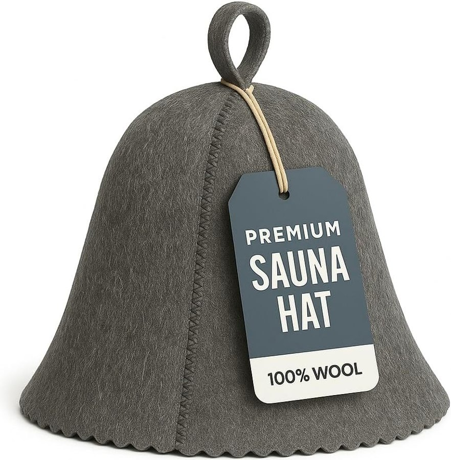
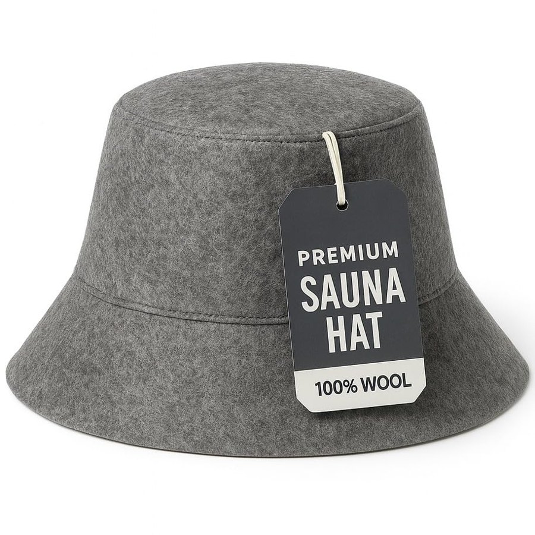

How sauna heat stacks up, and why your head feels it first
Why wool felt, and why the hat is worn dry
Choosing, wearing, and washing a hat
Typical temperatures for 13 sauna types
Etiquette and a first-timer checklist
A free guide by DIVELUX, makers of wool sauna hats Version 1.0 · November 2026 · diveluxsaunahat.com
212 °F100 °C · under the ceiling
Your head
190 °F88 °C · seated on the top bench
160 °F71 °C · bench level
105 °F40 °C · floor · illustrative figures
Start here
The short version
A sauna is not one temperature. It is a stack of layers, and your head sits in the hottest one you can reach. A hat is the simplest way to even things out.
Hot air rises. The air at head height on the top bench can be far hotter than the air around your feet.
Your head heats first. It is the highest part of you, and your ears and hair take the heat with no protection.
Wool felt insulates. Thick felt traps air between its fibers and slows the heat on its way to your scalp.
Wear the hat dry. A dry felt hat is the insulator. Put it on before you walk into the hot room.
Loose is good. A roomy hat leaves a layer of air around your head. If it sits too low, fold the edge up.
Care is simple. Hand wash in cool, room-temperature water, squeeze, and air dry. No machine, no dryer.
In this guide
Why the air is hottest at the top3
What a sauna hat does4
Hats and head wraps by tradition5
Materials: why wool felt6
How to choose a hat7
How to wear it and care for it8
Typical temperatures by sauna type9
Sauna etiquette in brief10
First-timer checklist11
About DIVELUX and disclaimer12
This guide is general information, not medical advice. If you have a health condition, are pregnant, or take medication, talk to your doctor before using a sauna.
Warm air is lighter than cool air, so it floats up and collects under the ceiling. In a closed, heated room this builds layers, a pattern called thermal stratification.
Illustrative example of a hot Finnish-style sauna, not a measurement. Real rooms vary with the stove, the ceiling height, ventilation, and how much water goes on the stones.
What this means on the bench
Sauna benches are raised on purpose: the higher you sit, the more heat you get. Seated on the top bench, your feet rest in mild air while your head is close to the hottest layer in the room.
That is why people often feel "too hot" in the head and ears first, well before the rest of the body has warmed through.
What steam adds
When water hits the stones, a wave of hot, humid air rolls up to the ceiling and then down over the benches. It reaches your head and shoulders first.
Moving down one bench is the quickest way to turn the heat down. Covering your head is the other.
A sauna hat works like an oven mitt for your head. It does not cool you. It slows the heat on its way to your scalp, ears, and hair.
Dry wool felt, a few millimeters thick: tangled fibers with air trapped between them. Schematic, not to scale.
Felt is mostly air
Wool felt is a dense mat of tangled fibers with countless tiny air pockets between them. Still air is a poor conductor of heat, so a thick layer of felt makes a good barrier between the hot room and your head.
Dry is the point
A sauna hat is worn dry. Dry felt holds the air that does the insulating. Keep the hat in the changing room, put it on before you enter the hot room, and hang it up to air out between visits.
Hair and ears
The hat covers the parts that sit highest and have the least protection: the top of the head, the tips of the ears, and your hair, which many bathers find gets dry and brittle with regular sauna heat.
What it helps with
Keeps the head and ears from feeling scorched before the body is warm
Shields hair from the hottest, driest air
Makes the top bench and steam bursts more comfortable
What it does not do
It does not lower your body temperature
It does not make a long session safe
It is not a treatment for any condition
If you feel dizzy, sick, or unwell, leave the hot room, hat or no hat.
Felt is one of the oldest textiles people make, and covering the head in the heat is an old habit wherever steam baths are hot. Customs differ from country to country.
Russian banya
The felt banya hat is part of the standard kit, next to the leafy whisk (venik) and a sheet or towel. The same custom is found in Ukraine, Belarus, and neighboring countries. Hats are usually bell-shaped, and novelty shapes are common.
Baltic countries
In the Latvian pirts and the Lithuanian pirtis, where a bath master may lead long whisking rituals, wool felt hats are widely used. Estonians have their own word for the sauna hat, saunamüts.
Finland
Finns call it a saunahattu. Some bathers wear one, mostly in very hot saunas, and many do not. It is a matter of personal habit.
Germany, Austria, Switzerland
The felt Saunahut is a common accessory, useful during an Aufguss, when a sauna master pours water on the stones and fans the hot air toward the benches with a towel.
Japan
Sauna hats in wool felt or cotton terry became a popular accessory with the country's recent sauna boom.
Korea
In a jjimjilbang, a small towel is folded into the "sheep head" shape (yangmeori), with a rolled bun over each ear. It keeps hair back and is mostly a playful custom, not heat protection.
Hammam
There is no hat in the hot room. After the wash, a cotton towel is often wrapped around the hair while resting.
Sauna hats are sold in four main materials. They are not equal in the heat.
Material
In the heat
With sweat and steam
Good to know
Wool felt
Thick and full of trapped air, so it insulates well. The traditional choice.
Wool fibers take up moisture vapor and still feel dry to the touch.
Keeps its shape. Needs gentle hand washing in cool water.
Linen
Thin and breathable. Covers the hair but insulates much less than felt.
Dries fast.
Light and easy to pack. A fair choice for mild rooms.
Cotton or terry
Thicker than linen, thinner than felt. Moderate protection.
Absorbs sweat and holds it, so it gets heavy and loses insulation.
Easy to launder. A towel over the head is the same idea.
Synthetic felt
Insulates, but does not breathe like wool.
Does not manage moisture as well; can feel clammy.
Usually the cheapest. Check the label: "felt" does not always mean wool.
What to look for in wool felt
100% wool on the label, not a wool blend
Dense, even felt a few millimeters thick, with no thin spots when held to the light
Neat, flat seams that will not press into your forehead
A loop at the top for hanging it to dry
If wool makes you itch
Felt can feel coarse at first and softens with use. If your skin is sensitive to wool, a thin cotton cap or bandana under the hat works well, or choose linen and sit a bench lower.
Shape is mostly taste. Fit matters more, and looser is better than you might expect.
Bell
The classic shape. Tall crown with air space above the head, sides that come down over the ears.
Bucket
Flat crown with a short brim that shades the ears, eyes, and neck. Looks like an everyday hat.
Too big? Fold the edge
Turn the edge up once to shorten the hat. The double layer adds insulation at the brow.
A loose fit is a plus
A sauna hat should rest on your head, not grip it. The gap between felt and scalp is one more layer of still air, and a roomy hat is easy to pull down over your ears when steam rolls in.
Most felt hats come in one size. If yours sits too low, fold the edge up.
Quick checklist
Covers the top of your ears
Does not squeeze your forehead
Thick, even wool felt
Hanging loop or a shape that stands on its own
A color you can pick out on a shared hook

Bell hat in grey wool felt (DIVELUX).

Bucket hat with a brim in grey wool felt (DIVELUX).
Start with a dry hat. Put it on in the changing room, after your shower and before the hot room.
Pull it down to cover the tops of your ears. Long hair can be tucked up inside.
Keep it on for the whole round, most of all on the top bench and when water goes on the stones.
Take it off when you step out to cool down, and put it back on for the next round.
After each visit
Shake the hat out and hang it by the loop somewhere with moving air until it is fully dry. Do not leave it balled up in a gym bag.
Felt does not need washing after every use. Airing it out is enough most of the time. Wash it when it looks or smells like it needs it.
Washing a wool felt hat
Heat and rough handling are what make wool shrink and harden. Keep both away and the hat lasts for years.
Cool water
Room temperature, about 20–24 °C (68–75 °F). Never warm or hot.
Hand wash only
A little mild soap. Press the felt gently; do not scrub hard.
Squeeze, do not wring
Press the water out between your palms or in a towel.
Air dry
Shape it by hand and hang it by the loop or set it over a jar.
No washing machine
No dryer
No warm or hot water
Wash by hand only, in cool, room-temperature water (about 20–24 °C / 68–75 °F, never warm or hot). Squeeze the water out without wringing, reshape, and air dry away from heaters and direct sun. Do not try to shrink a felt hat to size; fold the edge instead.
Commonly quoted ranges for the air in the hot room. The lower the humidity, the higher the temperature people can sit in comfortably.
Type
Air, °C
Air, °F
Humidity
Round, min
Water on stones
Finnish sauna
70–100
158–212
low (10–20%)
10–20
yes
Estonian sauna
70–100
158–212
low (10–20%)
10–20
yes
Swedish bastu
70–90
158–194
low (10–20%)
10–20
yes
Norwegian badstue
70–90
158–194
low (10–20%)
10–20
yes
Russian banya
60–90
140–194
medium (40–70%)
5–15
yes
German Aufguss sauna
80–100
176–212
low
10–15
yes
Bio sauna (soft sauna)
45–60
113–140
medium (40–55%)
—
no stones
Infrared sauna
45–60
113–140
low
15–30
no stones
Steam room
40–50
104–122
high (95–100%)
10–15
no stones
North American gym sauna
70–90
158–194
low
10–20
sometimes
Turkish hammam
40–50
104–122
high
—
no
Japanese sauna
80–100
176–212
low
6–12
sometimes
Korean jjimjilbang
40–90
104–194
low
—
no
Compiled reference ranges from general published descriptions, not measurements. Individual rooms vary. A dash means no figure is given. Humidity in a stove-heated sauna jumps briefly each time water goes on the stones. Some traditions, such as smoke saunas, the Latvian pirts, and the Lithuanian pirtis, are left out of this table because published figures disagree.
Source: Sauna Traditions of the World, version 1.0 (DIVELUX, 2026), an open dataset with 28 traditions. Free download: diveluxsaunahat.com/pages/sauna-tools
Keep the first round short: 5 to 10 minutes is plenty
Breathe slowly through your nose
Leave as soon as you feel dizzy, sick, or uncomfortable
Stand up slowly
Between rounds
Cool down: fresh air, a cool shower, or a quick plunge
Take your hat off while you cool
Sit and rest at least as long as you were in the heat
Drink water
Two or three rounds is a full session for most people
Afterward
Rinse off and cool down fully before you dress
Drink more water
Hang your hat up to air dry
Give yourself a quiet half hour
Not medical advice. Sauna heat is a real load on the body. If you are pregnant, have a heart or blood pressure condition, or take medication, talk to your doctor first. Children and older adults need shorter, milder sessions. Never use a sauna after drinking alcohol.
DIVELUX is a small family brand in Irvine, California. We make one thing: sauna hats of 100% natural wool felt.
Each hat is felted and stitched by hand at a partner workshop in Ukraine and shipped from the United States. The felt is 4–5 mm thick. One size, about 24 inches around, in two shapes: the classic bell and a bucket with a brim.
We wrote this guide because we get the same good questions every week. It is free to read, share, and reprint.
DIVELUX bell hat, white wool felt with a blue edge.
Disclaimer
This guide is general information for healthy adults and is not medical advice. It does not diagnose, treat, or prevent any condition. Talk to your doctor before using a sauna if you are pregnant, have a heart, blood pressure, or other health condition, or take medication. Leave the hot room right away if you feel dizzy, sick, or unwell. Temperatures and times in this guide are commonly quoted ranges, not measurements or recommendations. Always follow the rules of the facility you visit.
Cite as: DIVELUX (2026). The Sauna Hat Guide: Why Heat Rises and What to Wear on Your Head (Version 1.0). https://diveluxsaunahat.com/pages/sauna-tools